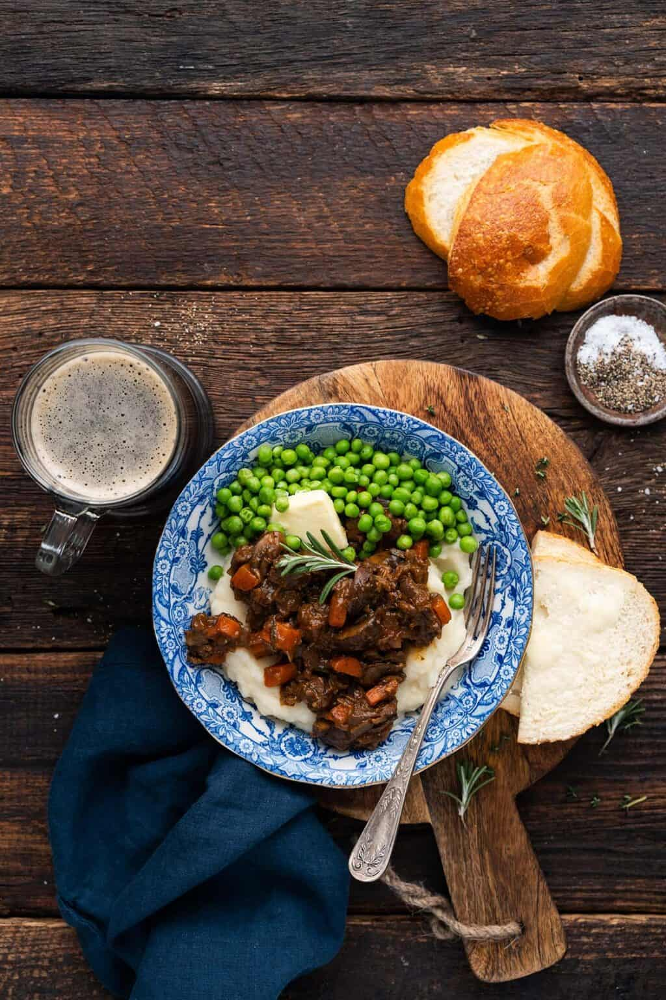

Beef Stew

Based on a traditional English beef and ale stew, this simplified, easy beef stew recipe features tender beef and vegetables in a thick, rich, and hearty gravy.
This recipe was inspired by a meal I had in a London pub a few years back. It was mid-February then too, and I couldn't seem to warm up. In classic pub food form, a hearty bowl of stew eaten at a heavy wooden table with a fire crackling on the hearth behind me was the best remedy.
This beef and ale stew is the easy version of that classic pub recipe. But I share a couple tricks to save time without sacrificing flavor. This recipe whips up in just an hour from start to finish, which means it's doable even on a weeknight.
Ingredients
- 2 Tbsp vegetable oil
- 1 lb. beef stew meat (cut into 1/4 in. cubes)
- 1 large onion (diced)
- 4 large cloves garlic (crushed)
- 2 tsp minced fresh rosemary
- 2 tsp medium carrots (peeled and diced)
- 1 cup ale
- 1 Tbsp tomato paste
- 2 tsp Worcestershire sauce
- 1 tsp Dijon mustard
- 1 tsp soy sauce
- 1/2 tsp salt
- 1/4 tsp black pepper
- 1 bay leaf
- 2 Tbsp cornstarch (dissolved in 1/4 cup cold water to form a slurry)
Steps
- Heat the oil in a 5-quart pot over medium heat.
- To the pot, add the beef stew meat in a single layer. Let it sear on both sides, about 3 minutes total (don't stir it until it starts to caramelize on the first side; this takes about 90 seconds). Stir in the onion and cook 2 minutes. Stir in the garlic and cook 30 seconds, stirring constantly.
- Add the rosemary, thyme, carrot, ale, tomato paste, Worcestershire sauce, Dijon mustard, soy sauce, salt, black pepper, and bay leaf. Give it a good stir.
- Bring up to a boil, and then cover the pot. Turn the heat down slightly so it's at a gentle boil, and cook until the meat is tender and the liquid is evaporated, about 30 minutes, stirring frequently.
- Stir in the cornstarch slurry and cook until thickened, about 30 seconds.
- Serve.
Return to Top
Return to Recipe Book